Image-only pre-tip centers and all-axis evidence — HOLD No product effect, tip relocation or new seed. Same three old Chromium224 cases in both decoders; WebKit104 no_face is not overridden. Estimator receives no manual annotation. Cyan=old observed coarse prefix/old tip; green=unique observed center, red=unresolved position, white=center displacement, yellow=fit segment restricted to sampled support. No extrapolated lash.
All margins/windows retained. window6 uses samples2/4/6: its actual support is roughly4nativepx, not6px. High TLS coherence from few points is not confidence or same-fiber proof. Sparse centers alone do not prove native continuity. Dense and forward panels show every available automatic axis with an inherited, uncalibrated floor; no favorable result selected. UNKNOWN is not approval. Native256px crops display100/200/400%; chart pixels are plotting pixels.
Native eye zoom 100% 200% 400% native-centers: shaft-02-native/chromium-C104-right-old16-margin1.5-centers.png native-centers: shaft-02-native/chromium-C104-right-old16-margin2.5-centers.png 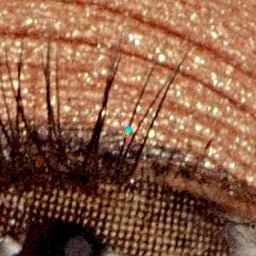
native-centers: shaft-02-native/chromium-C104-right-old16-native-original.png native-centers: shaft-02-native/chromium-PI729R1-margin1.5-centers.png native-centers: shaft-02-native/chromium-PI729R1-margin2.5-centers.png native-centers: shaft-02-native/chromium-PI729R1-native-original.png native-centers: shaft-02-native/chromium-PI729R2-margin1.5-centers.png native-centers: shaft-02-native/chromium-PI729R2-margin2.5-centers.png 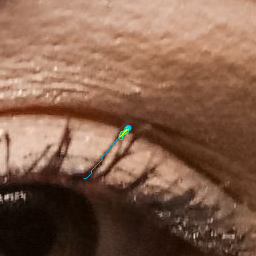
native-centers: shaft-02-native/chromium-PI729R2-native-original.png native-centers: shaft-02-native/webkit-C104-right-old16-margin1.5-centers.png native-centers: shaft-02-native/webkit-C104-right-old16-margin2.5-centers.png native-centers: shaft-02-native/webkit-C104-right-old16-native-original.png native-centers: shaft-02-native/webkit-PI729R1-margin1.5-centers.png native-centers: shaft-02-native/webkit-PI729R1-margin2.5-centers.png 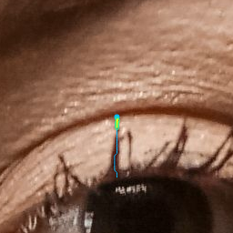
native-centers: shaft-02-native/webkit-PI729R1-native-original.png native-centers: shaft-02-native/webkit-PI729R2-margin1.5-centers.png native-centers: shaft-02-native/webkit-PI729R2-margin2.5-centers.png native-centers: shaft-02-native/webkit-PI729R2-native-original.png measurement-chart: shaft-08-plots/chromium-C104-right-old16-dense-forward.png measurement-chart: shaft-08-plots/chromium-C104-right-old16-margin1.5-profiles.png 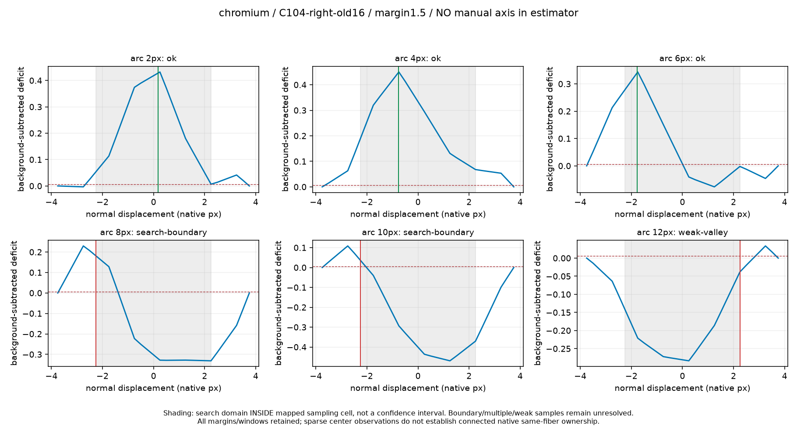
measurement-chart: shaft-08-plots/chromium-C104-right-old16-margin2.5-profiles.png 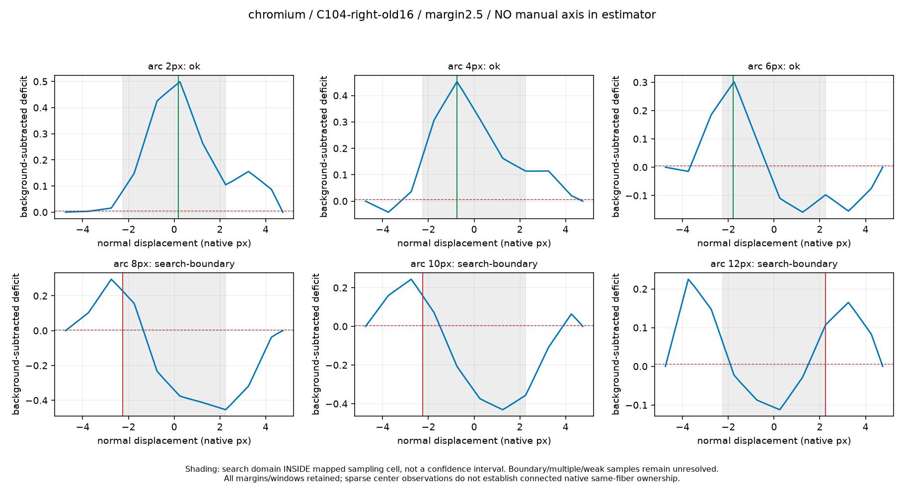
measurement-chart: shaft-08-plots/chromium-PI729R1-dense-forward.png measurement-chart: shaft-08-plots/chromium-PI729R1-margin1.5-profiles.png measurement-chart: shaft-08-plots/chromium-PI729R1-margin2.5-profiles.png 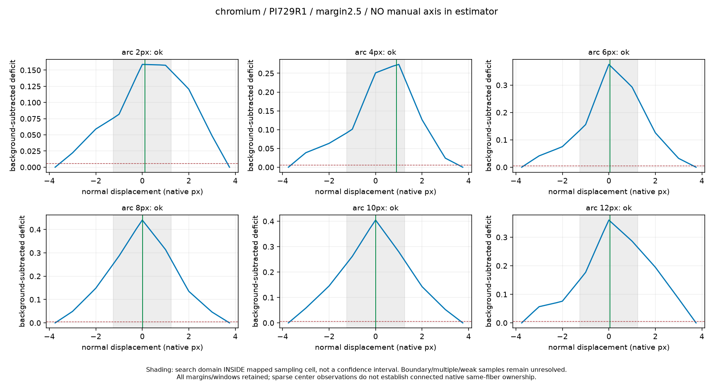
measurement-chart: shaft-08-plots/chromium-PI729R2-dense-forward.png measurement-chart: shaft-08-plots/chromium-PI729R2-margin1.5-profiles.png 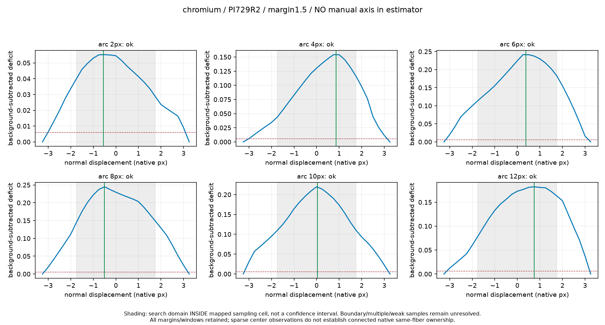
measurement-chart: shaft-08-plots/chromium-PI729R2-margin2.5-profiles.png 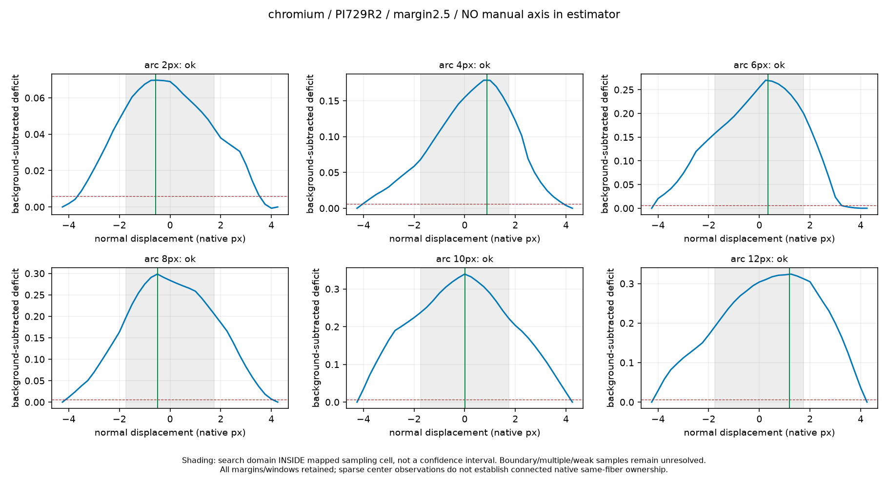
measurement-chart: shaft-08-plots/webkit-C104-right-old16-dense-forward.png 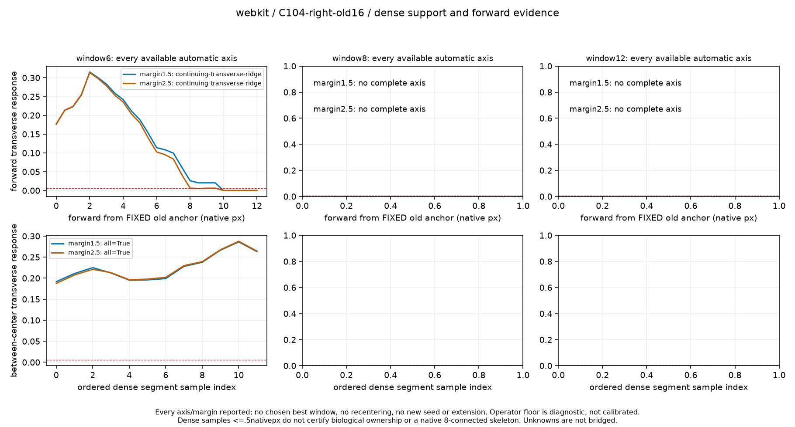
measurement-chart: shaft-08-plots/webkit-C104-right-old16-margin1.5-profiles.png 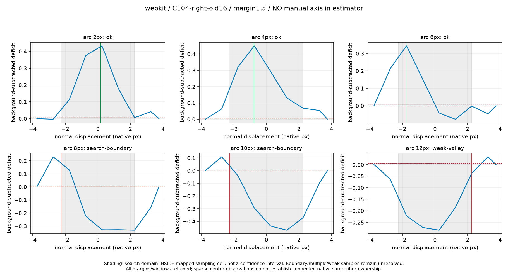
measurement-chart: shaft-08-plots/webkit-C104-right-old16-margin2.5-profiles.png 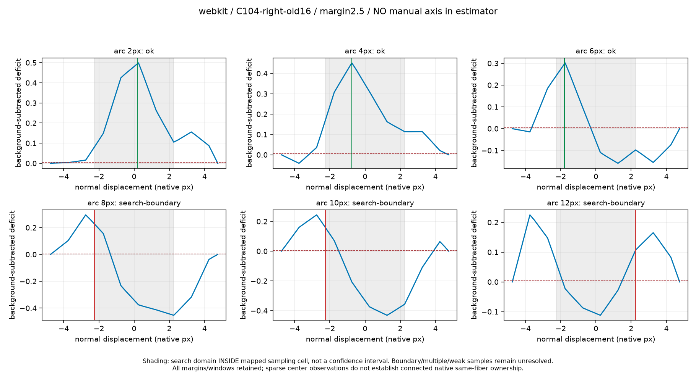
measurement-chart: shaft-08-plots/webkit-PI729R1-dense-forward.png 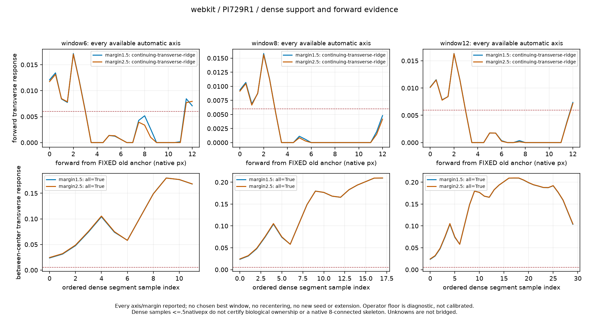
measurement-chart: shaft-08-plots/webkit-PI729R1-margin1.5-profiles.png 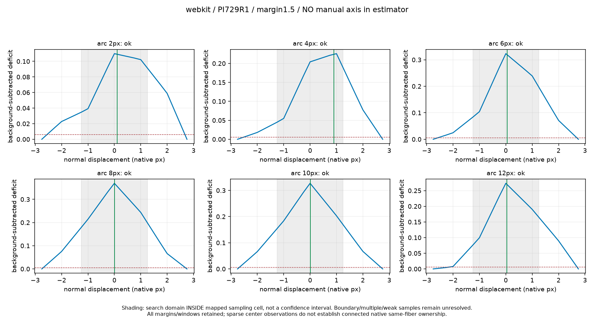
measurement-chart: shaft-08-plots/webkit-PI729R1-margin2.5-profiles.png 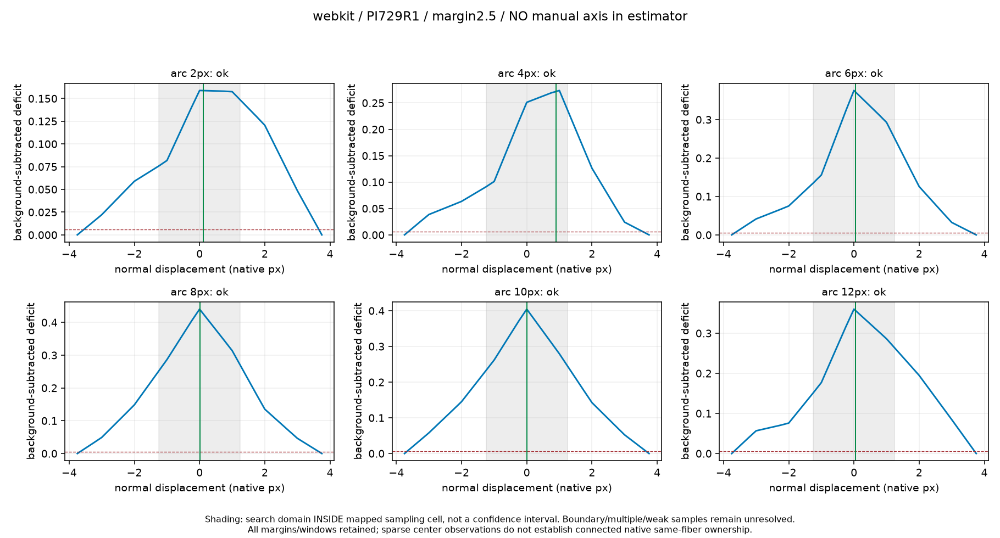
measurement-chart: shaft-08-plots/webkit-PI729R2-dense-forward.png 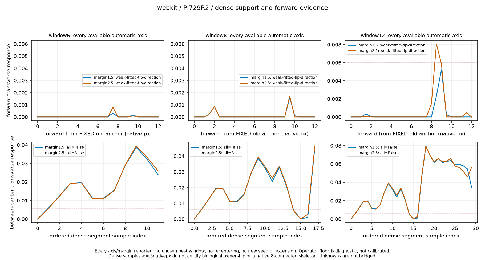
measurement-chart: shaft-08-plots/webkit-PI729R2-margin1.5-profiles.png 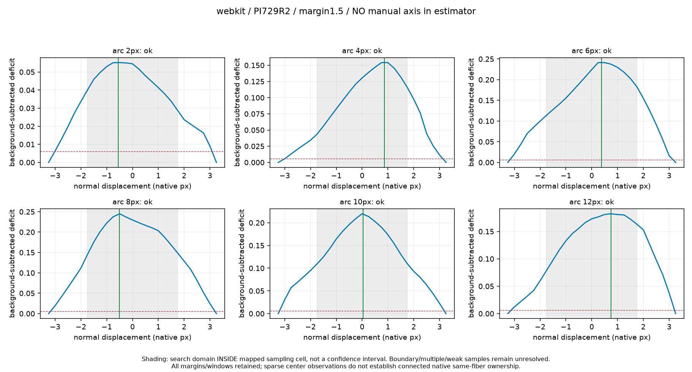
measurement-chart: shaft-08-plots/webkit-PI729R2-margin2.5-profiles.png 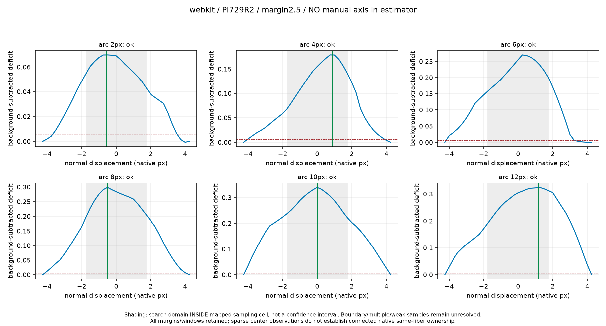